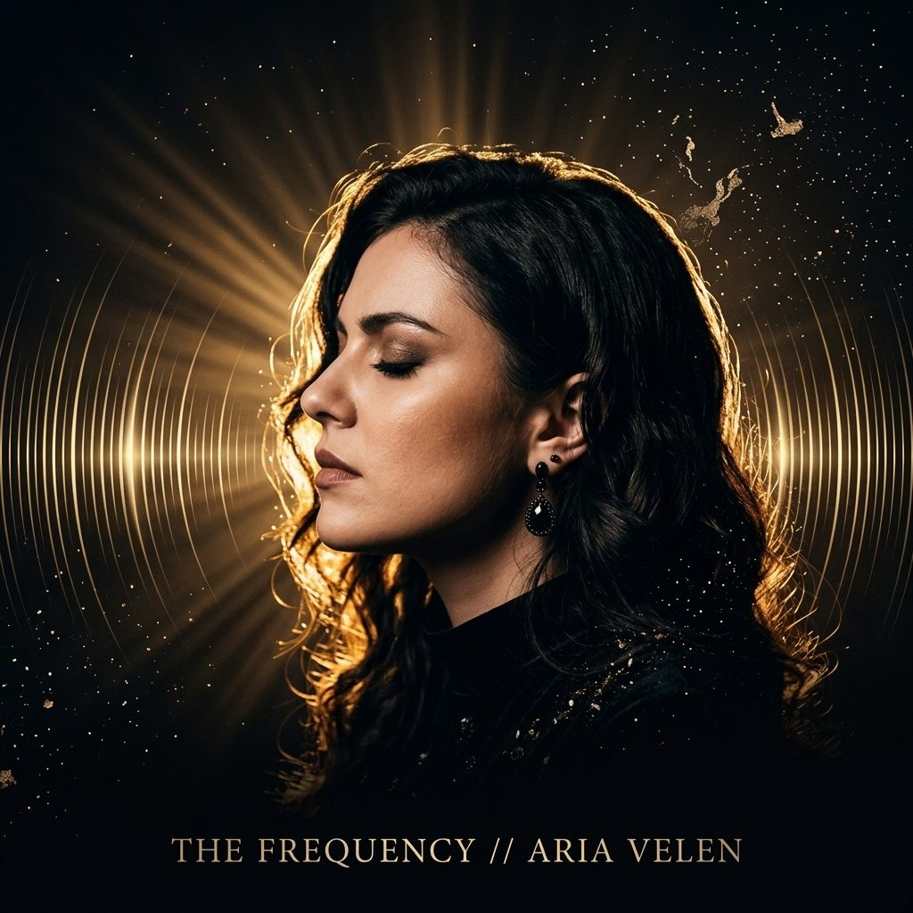
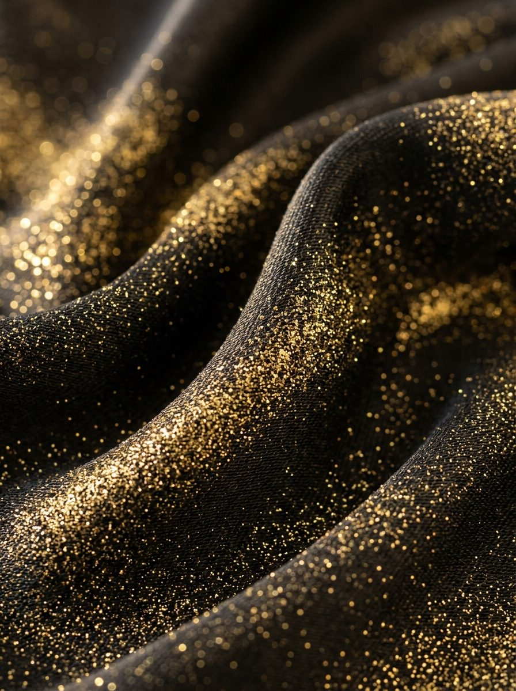

ARIA VELEN
SCROLL
—
ARIA VELEN
01
—
THE STATEMENT
Music that lives somewhere
between memory,
midnight and motion.
Aria Velen crafts sound as cinema — each track a frame, each silence a scene. Her voice moves through shadow and shimmer, building a world where emotion is architecture.

—
ARIA VELEN
02
—
LATEST RELEASE

Nocturne
Recorded between dusk and dawn, Nocturne is a study in restraint — a single piano, a single voice, and the slow geometry of longing. The first chapter of a new era.
—
ARIA VELEN
03
—
VISUAL GALLERY
—
ARCHITECTURE OF SILENCE


COLD & SILK